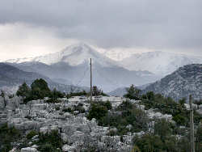
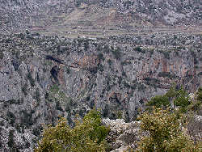

Taurus Region
|  |
| Image: Taurus Mountains in March. |
|  |
| Image: a typical view in the Taurus: steep gorges, caves, and people trying to live from terraced fields. |
The Taurus Mountains are the largest and most important karst area in Turkey. In an east-west running band along the coast, up to 200km wide, between Mediterranean Sea and Central Anatolia, the limestone forms mountains between 2,500m and 3,000m asl. The limestones are heavily folded and thrusted because of the Alpine orogeny, which is a result of the collision of the European and African plate. Cave development is influenced by the faults and thrusts and by the border to the surrounding insoluble schists.
The central Taurus Region is composed of Permian limestones, which are metamorphic, commonly known as marble. Mesozoic limestones and dolomites occur in over 1000m thick layers. They are surrounded by various rocks from Cambrian to recent age. The limestone is often surrounded by an ophiolitic melange from the Late Cretaceous forming an impermeable base or cover
The Taurus Region is located along the southern coast of Turkey, and a famous tourist region. About 40% of all foreign tourists to Turkey stay in and around Antalya. So it is easy to understand that numerous caves of the area are developed as tourist sights.
 Altınbeşik Mağarası
Altınbeşik Mağarası- Beldibi Mağarası
 Damlatas Magarasi
Damlatas Magarasi- Dim Magarasi
- Insuyu Magarasin
- Karain Magarasi
- Kocaín Mağarası
- Korsanini Mağarası
- TinazTepe Mağarları
- Yalandünya Mağarası
- Zeytintaşi Magarasi
- See also
 Search Google for "Taurus geology"
Search Google for "Taurus geology"